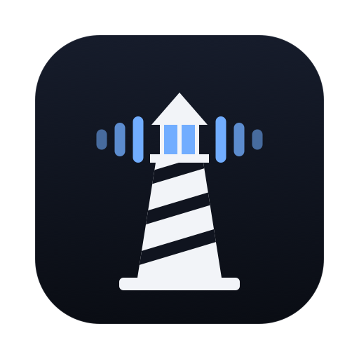
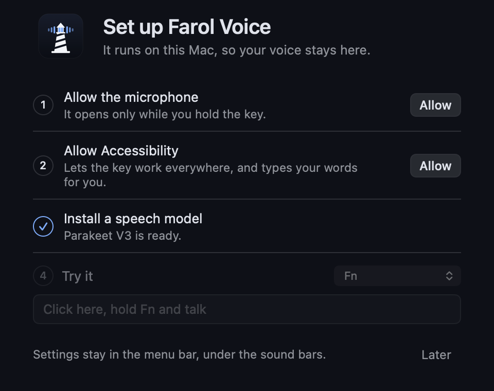
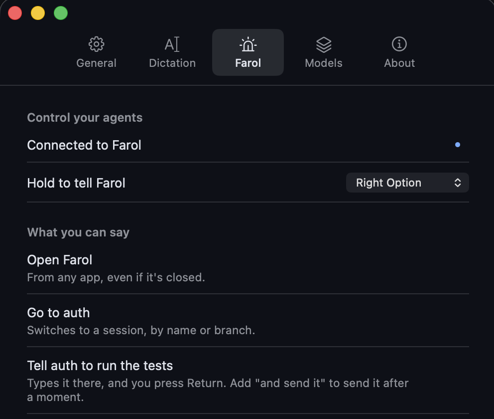

Farol Voice Type with your voice in any app, and tell your coding agents what to do. It all runs on your Mac.
Apple silicon, macOS 15+. Free and open source.
Talk to your agents
Hold a second key to tell Farol what to do from any app: open it, switch sessions, message an agent or start a task.
Works everywhere
Your editor, your terminal, Slack, a browser. It types wherever your cursor is, and puts your clipboard back afterwards.
Stays on your Mac
Speech runs on your own machine. Audio is never sent anywhere or saved, and once a model is installed it needs no network.
No account, no subscription
Free and open source under the MIT license. Install it, allow two permissions and start talking.
Pick your language
It recommends the model for what you speak: fast for English and 24 more languages, or about 100 languages with a slower one. Install and delete them yourself.
Gets your words right
Add the names and terms you use, and close matches become exactly what you wrote.
Careful with your words
It won't type into a password field or a question an agent is waiting on, and it never guesses between two sessions. Your words go to the clipboard instead.


Where it's going
Today you can tell Farol, the terminal for coding agents, what to do. Next, your agents answer out loud, then "OK Farol" makes it hands-free. Follow along on the roadmap.
Questions
Is it really free?
Yes. It's open source under the MIT license, with no account or subscription.
Does my voice leave my Mac?
No. Speech is turned into text on your Mac, and audio is never sent anywhere or saved. The app only goes online to download a model you choose to install, and to check for its own updates.
Why does it need Accessibility access?
macOS requires it for two things: noticing your key while you're in another app, and typing your words for you. It only looks for the key you chose, and doesn't record or store what you type. The code is open if you'd like to read it.
Which languages does it understand?
About 100. Choose yours and it recommends the model: Parakeet V3 is the fast one, for English and 24 more languages, most of them European, and Whisper covers the rest.
What do I need to run it?
A Mac with Apple silicon and macOS 15 or later, and about 600 MB of disk space for the Parakeet model.
Do I need Farol to use it?
Not for dictation, which works on its own in any app. Telling your agents what to do needs Farol 0.54.1 or later, with Settings, Agents, Let Farol Voice control sessions turned on.
What can I say to Farol?
"Open Farol", "go to auth", "tell auth to run the tests", add "and send it" to send, or "new task, add a search box". It reads session names and status, never your conversations.